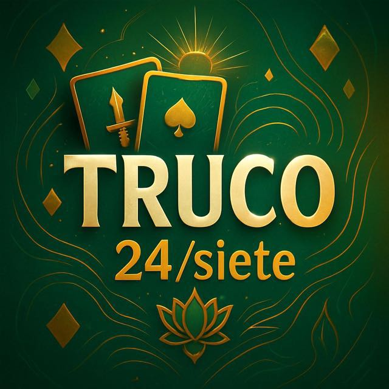

✔ PLATAFORMA VERIFICADA ✔
Torneos de Truco por dinero real
Te estamos conectando con nuestro equipo vía WhatsApp.
Ir a WhatsApp ahora
Acceso inmediato · Te explicamos en minutos
■ +10.000 jugadores ganando todos los días
★★★★★ Calificación 4.9/5 por jugadores reales
Entrás al grupo
Te damos la info y reglas claras. Estás listo para empezar en pocos minutos.
Partidas y torneos
Coordinás tu mesa con jugadores reales. Organizamos formatos todo el día.
Transparencia
Identificación de jugadores y control de fairness en cada encuentro.